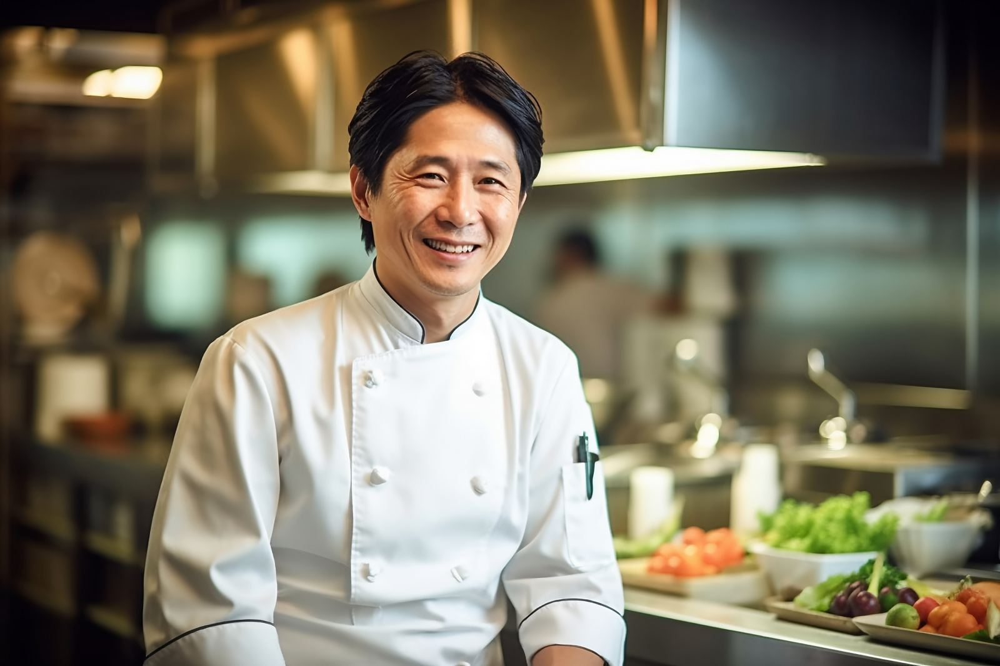
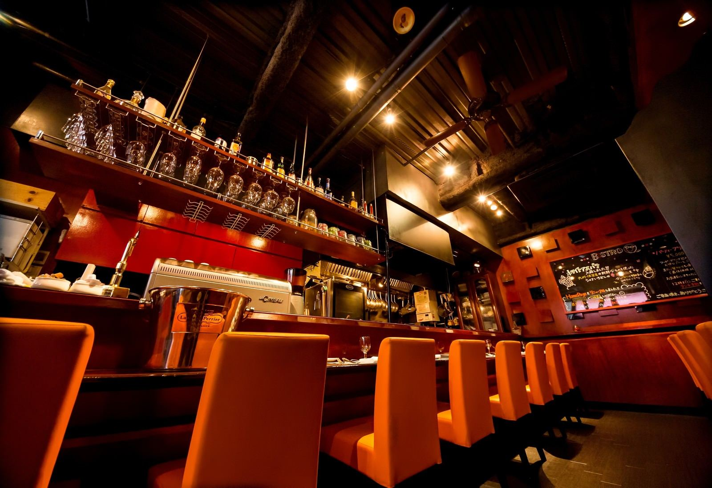
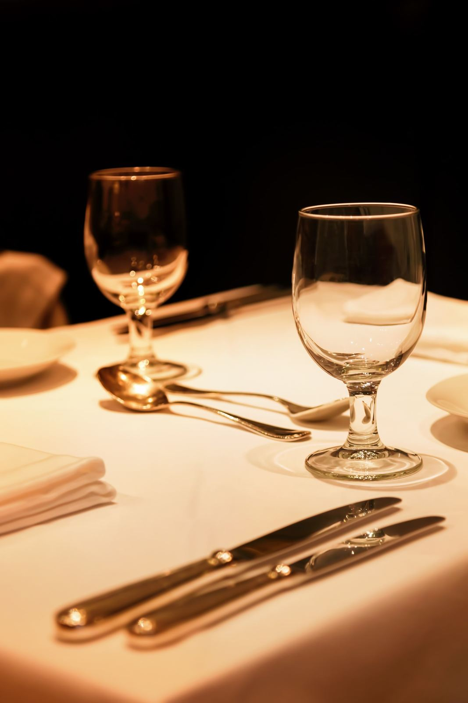

About Us
店舗案内
Concept
上質な空間と、
こだわりの一皿を。
メディアでも話題のフォアグラ入りハンバーグ。大切な人との記念日から気の合う仲間との女子会まで、上質な空間とこだわりの料理で、心に残るひとときをお届けします。
旬の食材を活かした自由な発想の料理と、訪れる人々に寄り添う温かなもてなしを大切にしています。

Message from the Chef
シェフあいさつ

Greeting
伝統的なフレンチの技法に
独自の感性を加え、
心に残る料理を追求する。
Vintageのホームページをご覧いただき、ありがとうございます。2015年、自身の理想とする料理を追求するため、この地にレストランをオープンいたしました。
国内各地の生産者を訪ね、食材への理解を深めながら、旬の食材を活かした自由な発想の料理をお届けしています。大切にしているのは、一皿の美味しさと同じくらい、訪れる皆さまに寄り添う温かなおもてなしです。
記念日のディナーにも、お仕事の合間のランチにも。皆さまのご来店を心よりお待ちしております。
- 出身
- 1978年 神奈川県出身
- 専門ジャンル
- 洋食全般
- 経験年数
- 37年
幼い頃から食への関心が強く、家族の食卓を通じて料理の楽しさに触れる。都内のフランス料理店で基礎を学び、都内有名ホテルのレストランにて本格的なフレンチの技術を習得。その後、都内の隠れ家的レストランで料理長を務め、素材の組み合わせや繊細な盛り付けなど、独自の料理スタイルを確立する。2015年、東京にレストラン【Vintage】をオープン。
Restaurant
外観・店舗情報

Exterior
赤坂・溜池山王駅から徒歩4分。黒いオーニングと金色のロゴが目印です。カウンター席・テーブル席に加え、10名様までのお席もご用意しています。
- 店名
- Vintage（ヴィンテージ）
- TEL
- 03-xxxx-xxxxタップで発信できます
- 住所
- 東京都港区赤坂x-xx-xx xxxxxx 地図を見る
- 営業時間
-
LUNCH
11:30 – 14:30
平日のみ ／ L.O. 14:00
DINNER
18:00 – 23:30
平日・土曜 ／ L.O. 22:00
- 定休日
- 日曜・祝日
- 平均予算
- ディナー 10,000円 ／ ランチ 1,500円
- お支払い
- クレジットカード可UFJ、VISA、JCB、ダイナース、DC、UC、AMEX、NICOS、MASTER、セゾン、銀聯
- 席数
- 30席宴会・パーティー時 立席30名／着席16名
- 駐車場
- なし（近隣のコインパーキングをご利用ください）
- 禁煙・喫煙
- 完全禁煙
- サービス・設備
-
貸切可10名席ありカウンター席ありワイン充実カクテル充実ランチメニューありフードアレルギー対応可ビーガン・ベジタリアンメニューあり英語メニューあり外国語対応可（英語）お子様連れ可バリアフリーカトラリー（洋食器）の用意ありFree Wi-Fiクレジットカード利用可
営業時間・定休日が記載と異なる場合がございますので、ご来店時は事前にご確認をお願いします。受動喫煙対策に関する法律が施行されておりますので、正しい情報はお店にお問い合わせください。
Access
アクセス
- 最寄駅
- 東京メトロ千代田線 赤坂駅 徒歩4分
東京メトロ銀座線 溜池山王駅 徒歩4分 - アクセス
- 千代田線「赤坂駅」5b出口より徒歩4分
銀座線「溜池山王駅」12番出口より徒歩4分
Gallery
ギャラリー





FAQ
よくあるご質問
ご相談の多いご質問お問い合わせ
Q貸切での利用は可能ですか？
はい。貸切でのご利用も承っております。パーティーや各種お集まりなどにぜひご利用ください。立食は最大30名様、着席は最大16名様までご利用いただけます。詳細はお電話（03-xxxx-xxxx）にてご相談ください。
Qアレルギーや苦手な食材への対応は可能ですか？
食物アレルギーへの対応を承っております。ご予約時に対象の食材や詳細をお知らせください。内容によっては対応が難しい場合もございますので、事前にご相談をお願いいたします。お電話：03-xxxx-xxxx
Qベジタリアンやヴィーガン向けのメニューはありますか？
はい。ベジタリアン・ヴィーガン向けのメニューをご用意しております。ご希望のお客様は、ご予約時にお気軽にお申し付けください。
Q予約は必要ですか？
ご予約なしでもご来店いただけますが、ゆったりとお食事をお楽しみいただくため、事前のご予約をおすすめしております。お電話（03-xxxx-xxxx）にてお問い合わせください。
ご来店について
Q営業時間を教えてください。
ランチ：平日 11:30～14:30（L.O.14:00）
ディナー：平日・土曜日 18:00～23:30（L.O.22:00）
Q定休日はいつですか？
日曜日・祝日を定休日としております。祝日の前後など、営業状況が異なる場合もございますので、ご来店前にお問い合わせください。
Qお店へのアクセス方法を教えてください。
東京メトロ千代田線「赤坂駅」5b出口より徒歩4分、東京メトロ銀座線「溜池山王駅」12番出口より徒歩4分です。どちらの駅からもアクセスしやすい立地となっております。
Googleマップで見る →
Q駐車場はありますか？
専用駐車場のご用意はございません。ご来店の際は、公共交通機関または近隣のコインパーキングをご利用ください。
お料理・サービスについて
Qランチ営業はしていますか？
はい。平日の11:30～14:30にランチ営業を行っております。お仕事の合間のお食事や、ゆったりとしたランチタイムにぜひご利用ください。
Qワインやカクテルは楽しめますか？
はい。お料理に合わせてお楽しみいただけるワインや、種類豊富なカクテルをご用意しております。お好みやお料理に合わせた一杯をご提案いたします。
店内設備・ご利用について
Q子ども連れでも利用できますか？
はい、お子様連れでのご来店も歓迎しております。ご家族でのお食事にもぜひご利用ください。
Q店内は禁煙ですか？
はい。当店は完全禁煙となっております。すべてのお客様に快適にお過ごしいただける環境づくりを心がけております。
Qクレジットカードは利用できますか？
はい。各種クレジットカードをご利用いただけます。VISA、JCB、AMEX、Mastercardなどに対応しております。
QWi-Fiは利用できますか？
はい。店内ではFree Wi-Fiをご利用いただけます。